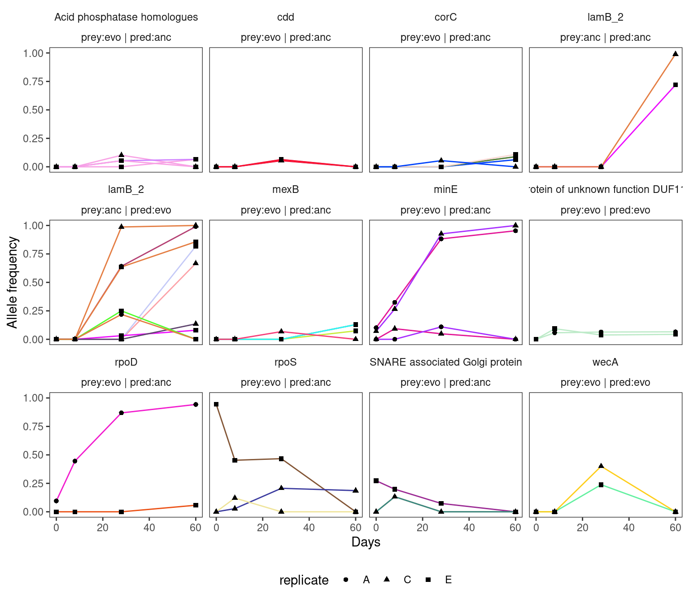
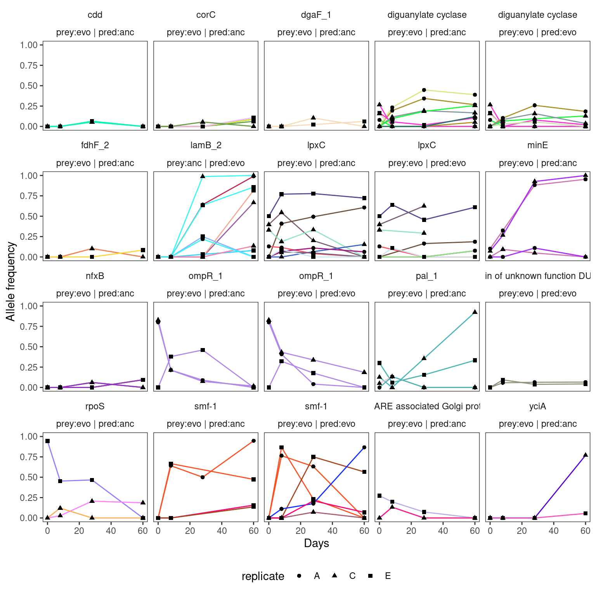

Plot variant time series
1 Setup
Libraries and global variables
Set up some directories
2 Read data
Show/hide code
# these were already filtered in the last step
mgvars <- read_tsv(here::here(data, "metagenome_variant_timeseries.tsv"))
degentab <- read_rds(here::here(shared, "annotations_codon_degeneracy.rds"))
genome_len <- read_tsv(here::here(shared, "HAMBI_genome_len.tsv"))
# annotations
annotations <- read_rds(here::here(shared, "annotations_codon_degeneracy.rds"))
# significantly parallel genes
par_genes <- read_tsv(here::here(data, "enriched_parallel_genes.tsv"))Show/hide code
cog_description <- tibble::tribble(
~COG_category_single, ~COG_category_long,
"J", "J - Translation, ribosomal structure and biogenesis",
"A", "A - RNA processing and modification",
"K", "K – Transcription",
"L", "L - Replication, recombination and repair",
"B", "B - Chromatin structure and dynamics",
"D", "D - Cell cycle control, cell division, chromosome partitioning",
"Y", "Y - Nuclear structure",
"V", "V - Defense mechanisms",
"T", "T - Signal transduction mechanisms",
"M", "M - Cell wall/membrane/envelope biogenesis",
"N", "N - Cell motility",
"Z", "Z – Cytoskeleton",
"W", "W - Extracellular structures",
"U", "U - Intracellular trafficking, secretion, and vesicular transport",
"O", "O - Posttranslational modification, protein turnover, chaperones",
"X", "X - Mobilome: prophages, transposons",
"C", "C - Energy production and conversion",
"G", "G - Carbohydrate transport and metabolism",
"E", "E - Amino acid transport and metabolism",
"F", "F - Nucleotide transport and metabolism",
"H", "H - Coenzyme transport and metabolism",
"I", "I - Lipid transport and metabolism",
"P", "P - Inorganic ion transport and metabolism",
"Q", "Q - Secondary metabolites biosynthesis, transport and catabolism",
"R", "R - General function prediction only",
"S", "S - Function unknown"
)
withr::with_seed(12367,
cogpal <- unname(createPalette(length(unique(cog_description$COG_category_single)), c("#F3874AFF", "#FCD125FF"), M=5000))
)
names(cogpal) <- cog_description$COG_category_long3 Clustering
One clustering approach is with the kml package - see tutorial here. Another option would be to use the curveRep function from Hmisc - see more here.
Classic old hierarchical clustering from hclust works best and is easiest to use
Show/hide code
# create unique group id as a convenience for later plotting
df_grouped <- mgvars %>%
#filter(!str_detect(effect, "intergenic|intragenic|synonymous|fusion")) %>%
#filter(!str_detect(impact, "MODIFIER")) %>%
group_by(strainID, chrom, pos, ref, alt, replicate, prey_history, predator_history) %>%
mutate(group_id = cur_group_id()) %>%
relocate(group_id) %>%
ungroup()
# format the grouped dataframe in a way that can be plotted
df2clust <- df_grouped %>%
mutate(day = paste0("day", time_days)) %>%
select(group_id, day, freq_alt_complete) %>%
pivot_wider(names_from = "day", values_from = "freq_alt_complete") %>%
as.data.frame() %>%
column_to_rownames(var = "group_id")
# scale the dataframe for clustering
df2clust_scaled <- scale(df2clust)
# perform the hierarchcical clustering using euclidean distance and Ward's D
hc <- hclust(dist(df2clust_scaled, method = "euclidean"), method = "ward.D2" )
# get order of the clustered observations. The order is for the groups
ord <- hc$order
# get cluster membership. Again memebership is for the groups
myclust <- cutree(hc, k = 6)
df2plot <- df_grouped %>%
mutate(cluster = myclust[group_id],
order = ord[group_id]) %>%
# convert group_id into a factor that is ordered by the hierarchical clustering
# done above
mutate(group_id = factor(group_id, levels = ord),
cluster = factor(cluster)) %>%
mutate(day = factor(time_days),
pos = factor(pos),
mylab = interaction(replicate, prey_history, predator_history, paste0(locus_tag, "_", pos)),
strainID2 = case_when(strainID == "HAMBI_0403" ~ 5,
strainID == "HAMBI_1287" ~ 4,
strainID == "HAMBI_1972" ~ 2,
strainID == "HAMBI_1977" ~ 3,
strainID == "HAMBI_2659" ~ 1)) %>%
mutate(mylab2 = fct_reorder(group_id, strainID2)) %>%
relocate(mylab2, order, strainID2) 4 Main text figure
Idea is to have a one heatmap for the alt allele frequencies for every detected mutation that passes our thresholds and then have some horiztonal bars which designate the different treatment combinations, the longitudinal clusters, and the species identieis stacked on top. Then below this we will have some simple line plots show the highly parallel mutations identified in the prior analysis.
4.1 Heatmap all species together
Show/hide code
blank_theme01 <- function(){
theme(
panel.grid = element_blank(),
panel.border = element_blank(),
panel.background = element_blank(),
axis.text = element_blank(),
axis.ticks = element_blank(),
legend.title = element_blank(),
plot.margin = unit(c(0,0,0,0), "cm"),
strip.background = element_blank(),
strip.text = element_blank()
)
}
blank_theme02 <- function(){
theme(
panel.grid = element_blank(),
panel.border = element_blank(),
panel.background = element_blank(),
axis.ticks = element_blank(),
legend.title = element_blank(),
strip.background = element_blank(),
strip.text = element_blank()
)
}
phoriz_bar <- function(df, fillvar, mypal){
# only take the first time point so to make one bar
filter(df, day == 0) %>%
ggplot(aes(y = day, x=mylab2, fill = {{ fillvar }})) +
geom_tile() +
labs(x = NULL, y = NULL) +
facet_wrap(prey_history ~ predator_history, scales = "free", nrow = 1) +
scale_fill_manual(values = {{ mypal }}) +
blank_theme01()
}
pheat_nolb <- function(df, fillvar){
ggplot(df, aes(y = day, x=mylab2, fill = {{ fillvar }} )) +
geom_tile() +
labs(x = NULL, y = NULL) +
facet_wrap(prey_history ~ predator_history, scales = "free", nrow = 1) +
scale_fill_viridis_c(limits = c(0, 1), trans = "sqrt") +
scale_x_discrete(guide = guide_axis(angle = 90)) +
blank_theme01()
}
pheat_labs <- function(df, fillvar){
ggplot(df, aes(y = day, x=mylab2, fill = {{ fillvar }})) +
geom_tile() +
labs(x = NULL, y = NULL) +
facet_wrap(prey_history ~ predator_history, scales = "free", nrow = 1) +
scale_fill_viridis_c(limits = c(0, 1), trans = "sqrt") +
scale_x_discrete(guide = guide_axis(angle = 90)) +
blank_theme02()
}4.1.1 All alleles
Show/hide code
#clupal <- unname(createPalette(length(unique(myclust)), c("#F3874AFF", "#FCD125FF"), M=5000))
clupal <- gray.colors(length(unique(myclust)), start = 0.1, end = 0.9, gamma = 2.2, 1, rev = TRUE)
names(clupal) <- unique(myclust)
pheat_all <- phoriz_bar(filter(df2plot, strainID == "HAMBI_2659"), cluster, clupal) +
pheat_nolb(filter(df2plot, strainID == "HAMBI_2659"), freq_alt_complete) +
phoriz_bar(filter(df2plot, strainID == "HAMBI_1972"), cluster, clupal) +
pheat_nolb(filter(df2plot, strainID == "HAMBI_1972"), freq_alt_complete) +
phoriz_bar(filter(df2plot, strainID == "HAMBI_1977"), cluster, clupal) +
pheat_nolb(filter(df2plot, strainID == "HAMBI_1977"), freq_alt_complete) +
phoriz_bar(filter(df2plot, strainID == "HAMBI_1287"), cluster, clupal) +
pheat_nolb(filter(df2plot, strainID == "HAMBI_1287"), freq_alt_complete) +
phoriz_bar(filter(df2plot, strainID == "HAMBI_0403"), cluster, clupal) +
pheat_nolb(filter(df2plot, strainID == "HAMBI_0403"), freq_alt_complete) +
plot_layout(ncol = 1, nrow = 10,
heights = c(0.25, 1, 0.25, 1, 0.25, 1, 0.25, 1, 0.25, 1),
guides = "collect")
pheat_all4.1.1.1 Save
4.1.2 Parallel genes
Show/hide code
pdfr_evo <- left_join(par_genes, df2plot,
by = join_by(locus_tag, strainID, prey_history, predator_history, chrom)) %>%
filter(prey_history == "evo") %>%
# some manual renaming
mutate(gene = case_when(locus_tag == "H1287_02172" ~ "yddV_2",
locus_tag == "H1977_02612" ~ "dppA/oppA",
locus_tag == "H1972_00299" ~ "PAP2_like",
locus_tag == "H1972_02826" ~ "ynjC",
locus_tag == "H1972_00671" ~ "yqaA",
locus_tag == "H1972_00421" ~ "hyp",
locus_tag == "H1972_02723" ~ "yifE",
locus_tag == "H2659_01789" ~ "hyp",
TRUE ~ gene)) %>%
mutate(gene_lab = if_else(is.na(gene), Preferred_name, gene)) %>%
mutate(gene_lab = if_else(gene_lab == "-", locus_tag, gene_lab)) %>%
mutate(gene_lab = paste0(gene_lab, " | ", replicate, " | ", cluster, "|", group_id)) %>%
arrange(COG_category_long, gene_lab) %>%
mutate(mylab2 = factor(gene_lab, unique(gene_lab)))
pdfr_anc <- left_join(par_genes, df2plot,
by = join_by(locus_tag, strainID, prey_history, predator_history, chrom)) %>%
filter(prey_history == "anc") %>%
mutate(gene = case_when(locus_tag == "H1972_02826" ~ "ynjC",
locus_tag == "H1972_00421" ~ "hyp",
TRUE ~ gene)) %>%
mutate(gene_lab = if_else(is.na(gene), Preferred_name, gene)) %>%
mutate(gene_lab = if_else(gene_lab == "-", locus_tag, gene_lab)) %>%
mutate(gene_lab = paste0(gene_lab, " | ", replicate, " | ", cluster, "|", group_id)) %>%
arrange(COG_category_long, gene_lab) %>%
mutate(mylab2 = factor(gene_lab, unique(gene_lab)))
# evolved
pheat_par <- phoriz_bar(filter(pdfr_evo, strainID == "HAMBI_2659"), COG_category_long, cogpal) +
pheat_labs(filter(pdfr_evo, strainID == "HAMBI_2659"), freq_alt_complete) +
# evolved 1972
phoriz_bar(filter(pdfr_evo, strainID == "HAMBI_1972"), COG_category_long, cogpal) +
pheat_labs(filter(pdfr_evo, strainID == "HAMBI_1972"), freq_alt_complete) +
# ancestral 1972 - the only species that has significantly parallel genes in the ancestral treatment
phoriz_bar(filter(pdfr_anc, strainID == "HAMBI_1972"), COG_category_long, cogpal) +
pheat_labs(filter(pdfr_anc, strainID == "HAMBI_1972"), freq_alt_complete) +
# evolved 1977
phoriz_bar(filter(pdfr_evo, strainID == "HAMBI_1977"), COG_category_long, cogpal) +
pheat_labs(filter(pdfr_evo, strainID == "HAMBI_1977"), freq_alt_complete) +
# evolved 1287
phoriz_bar(filter(pdfr_evo, strainID == "HAMBI_1287"), COG_category_long, cogpal) +
pheat_labs(filter(pdfr_evo, strainID == "HAMBI_1287"), freq_alt_complete) +
plot_layout(ncol = 1, nrow = 10,
heights = c(0.25, 1, 0.25, 1, 0.25, 1, 0.25, 1, 0.25, 1),
guides = "collect")
pheat_par4.1.2.1 Save
4.2 Individual allelle trajectories
Read data from parallelism analysis
Function for plotting trajectories for indivdidual genes
Show/hide code
plotpargenes <- function(strainID){
pdfr <- left_join(par_genes, df2plot,
by = join_by(locus_tag, strainID, prey_history, predator_history, chrom)) %>%
# to reduce size only include genes that are mutated in at least two of the replicates
filter(n_replicate >=2) %>%
# name the genes for plotting
mutate(gene_lab = if_else(is.na(gene), Preferred_name, gene),
treat = paste0("prey:", prey_history, " | pred:", predator_history)) %>%
mutate(gene_lab = if_else(gene_lab == "-", Description, gene_lab)) %>%
filter(strainID == {{ strainID }})
# make random color set to help differentiate alleles
mypal <- unname(createPalette(length(unique(pdfr$mylab2)), c("#F3874AFF", "#FCD125FF"), M=5000))
ggplot() +
geom_line(data=pdfr[!is.na(pdfr$freq_alt_complete), ],
aes(x=time_days, y=freq_alt_complete,
group = mylab2,
color = hgvs_p)) +
geom_point(data = pdfr,
aes(x=time_days, y=freq_alt_complete, shape = replicate),
alpha = 1) +
guides(color = "none") +
scale_color_manual(values = mypal) +
facet_wrap(gene_lab ~ treat) +
labs(x = "Days", y = "Allele frequency") +
theme_bw() +
theme(
legend.position = "bottom",
strip.placement = 'outside',
strip.background = element_blank(),
panel.grid = element_blank())
}4.2.1 HAMBI_1287
4.2.2 HAMBI_1972

4.2.3 HAMBI_1977
Warning: Removed 9 rows containing missing values or values outside the scale range
(`geom_point()`).4.2.4 HAMBI_2659
Warning: Removed 12 rows containing missing values or values outside the scale range
(`geom_point()`).4.2.5 Selection of parallel genes to plot
Show/hide code
pdfr <- par_genes %>%
filter(n_replicate >= 2) %>%
arrange(desc(gene_multiplicity_m_i)) %>%
# take top 20 highest multiplicitiies
slice(1:20) %>%
left_join(df2plot, by = join_by(locus_tag, strainID, prey_history, predator_history, chrom)) %>%
# name the genes for plotting
mutate(gene_lab = if_else(is.na(gene), Preferred_name, gene),
treat = paste0("prey:", prey_history, " | pred:", predator_history)) %>%
mutate(gene_lab = if_else(gene_lab == "-", Description, gene_lab))
mypal <- unname(createPalette(length(unique(pdfr$mylab2)), c("#F3874AFF", "#FCD125FF"), M=5000))
ggplot() +
geom_line(data=pdfr[!is.na(pdfr$freq_alt_complete), ],
aes(x=time_days, y=freq_alt_complete,
group = mylab2,
color = hgvs_p)) +
geom_point(data = pdfr,
aes(x=time_days, y=freq_alt_complete, shape = replicate),
alpha = 1) +
guides(color = "none") +
scale_color_manual(values = mypal) +
facet_wrap(gene_lab ~ treat) +
labs(x = "Days", y = "Allele frequency") +
theme_bw() +
theme(
legend.position = "bottom",
strip.placement = 'outside',
strip.background = element_blank(),
panel.grid = element_blank())Warning: Removed 11 rows containing missing values or values outside the scale range
(`geom_point()`).